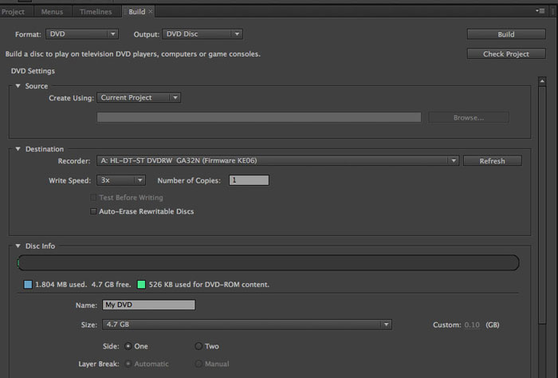

5.1 Music to DVD
You need to be in a LB Edit Suite
A. Bounce your surround mix out of Pro Tools
- File> bounce to disk
- Change settings.
- Convert after bounce
- Save
B. Creating an AC-3 File
- Create a new Pro Tools session. 24 Bit Depth. 48k Sample Rate.
- Import your six stems from the last step.
- Click Add. Click Done.
- Click New Track and Session Start. Click OK.
- Select the audio in the timeline
- Audio Suite> Sound Field> SoundCode Dolby Digital Encode
- Set the Dolby Digital encoding parameters. Use settings below.
- Set the output file name.
- Click on the “Encode” button.
C. Photoshop
- File> new> use settings below
- Click OK.
- On the toolbar, click on the “T” for text tool
- Click and drag on your work area to create a textbox
- Add your name, band name, and song name
- Format text and background however you like.
- When you are finished making your slate go to File> Save As
- Save the file. Format: JPEG. Click Save.
- Hit OK.
D. Encore
- Click New Project
- Name your project and choose the save location. The rest stays the same. Press OK.
- Menu> New Menu
- File> Import As> Asset. Select your files (.ac3 and .jpg)
- On the toolbar, click on the “T” for text tool
- On the Menu, create a title for the DVD.
- Create a second text line for the title of your song
- On the toolbar, choose the Direct Select Tool and select your song title. Object> Convert to button.
- Timeline> New Timeline
- Move the .ac3 and .jpg to the timeline
- Click on the Timeline you created in the Project Pane. In the Properties Pane, change the end action of the timeline to the Menu> Default
- In the Project Pane double click on the Menu you created. Select the button and in the Properties Pane, change the Link to the Timeline> Chapter 1
- Repeat steps 7-12 for each song.
- Press the Preview button in the toolbar. And test the DVD. Exit here.

- Click on the build tab
- Change the Format to DVD and Output to DVD Disc
- Name the DVD sdfsafa
- Insert the DVD
- Build
Test in DVD Player